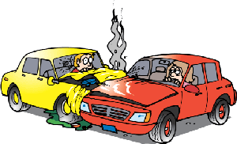

Accident Detection System
According to World Health Organisation, Road Traffic Injuries caused an estimated 1.25 million deaths worldwide i.e. one person is killed every 25 seconds. According to NDTV, over 1,37,000 people were killed in India in the year 2013, that is more than the number of people killed in all our wars together. There is 1 Death every 4 minutes due to a road accident in India. 1214 road crashed occurs every day in India. The loss to the Indian Economy due to fatalities and accident injuries is estimated at 3% of GDP.
- Very Efficient
- Very Compact
- Very Economic

The Proposed Design Of Accident Detection System Is Flexible.
Most Importantly, In The Current Era Of Inflation, The Gadget Comes In An Extremely Affordable Price Making It Accessible To All The Sections Of Society.
If we Don't Protect our people, then who really will ?